文字
背景
行間


校長花ごよみ
修学旅行第３日その５
夕食後に修学旅行委員（写真左）と文集係（写真右）の人たちの集合写真の撮影がされました。まずは、これまでの働きに対し感謝申し上げますととも、これからも最高の修学旅行になるようまた、作成する文集が心に残る素晴らしいものとなりますように、最後まで、みんなで協力して頑張っていきましょう。


修学旅行第３日その４
一日の班別活動を終えて皆無事に帰ってきました。この２日間は不慣れな土地での散策活動でしたのでかなり疲れたと思います。帰ってきたときの明るい充実した表情からは仲間と協力していい旅ができたようです。このあと18：00から夕食です。


今日の夕食はすき焼きです。


修学旅行第３日その３
本日のチェックポイントは、南禅寺、龍安寺、天龍寺、二条城、東寺でした。どのポイントも予定時間内に通過できました。天気も雲は多いものの良い天気になりました。（写真は聖護院門跡と聖護院とその石庭（修行場））


修学旅行第３日その２
朝食後、先生方の集合写真を撮ったり、保津川下りに行く班は早めに出発したり、着付けをして出かける班など、三々五々の出発風景となりました。元気に明るく出かけていきました。天気も徐々によくなってきています。


修学旅行第３日その１
今日11月14日5：30の段階では昨夜からの雨は小雨が降ったり止んだりという状況です。バスケット部の男子が朝練で平安神宮周辺をランニングしました。


朝食の様子
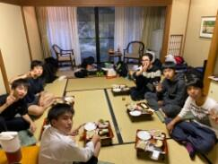
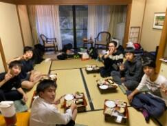
修学旅行第２日その４
夕食後19：00から希望者は夜間拝観へ出発しました。将軍塚、青蓮院、永観堂、高台寺のうち希望する場所へバスで移動しました。私は、今年は永観堂へ行きました。拝観した全員が予定通り帰って来て、２日目の活動もすべて無事に終了しました。明日の班別活動も思い出に残るすばらしいものにできるように頑張って参ります。（写真は永観堂での拝観の様子）

修学旅行第２日その３
生徒が本日の班別活動を終え、宿舎である聖護院御殿荘へ全員無事に帰って来ました。この後、18：00から部屋ごとに夕食です。
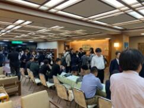

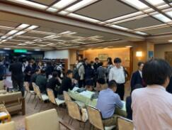
修学旅行第２日その２
各班とも判別活動の出発地に合わせ、宇治平等院方面3台、奈良公園（橿原神宮方面）方面3台、薬師寺方面2台のバスに分乗して移動します。私は、奈良公園方面に移動します。


興福寺の五重塔前でのチェックポイントの様子 時間に余裕を持ってチェックポイントを通ってくれました。この後も気をつけて行ってらっしゃい！


修学旅行第２日その１
6：00起床、吉野の朝は、かなり寒いです。それでも、生徒は元気です。7：00朝食 今日は班別行動なので。大きな荷物は別便で御殿荘に別便で送り、それぞれの出発地となる場所に方面別にバスに分乗して移動します。朝の天気は晴れ、夕方おそくなると雨の心配がありますが、今日も元気に行ってきます。（写真は群芳園からの朝の景色）


今日の朝食風景


修学旅行第１日その４
竹林院群芳園は世界遺産に登録された桜の名所吉野山の上千本エリアにあります。竹林院の庭園「群芳園」は、大和三代庭園の一つです。竹林院は、そもそも聖徳太子建立の一寺と伝えられ、宿坊として、豊臣秀吉、与謝野晶子はじめ、多くの文人墨客の宿として愛されきたそうです。館内にある書画も然り、来るたびにその奥深い魅力を感じることができる宿です。今日の夕食はみんなで大広間に集まって利休鍋を中心においしく楽しくいただき心も体も温まりました。ごま豆腐やわらび餅も美味しかったです。


修学旅行第１日その３
列車を降りてからはクラス別にバスで移動です。C,E組は伊賀上野コース、D組は山の辺の道コース、A組は飛鳥古代史コース、B組は、東大寺奈良公園コース、G組は、法隆寺薬師寺コースで、私は、F、H組と共に赤目四十八滝散策コースへ。赤目四十八滝は一級河川の滝川に流れ込む一連の滝郡で滝川の水がとにかく清く澄んでいてきれいでした。また、周辺の山の一部ですが紅葉がとてもきれいでした。前日に雨や雹が降ったそうですが今日は朝から好天に恵まれ、空気は多少冷えていましたがとても澄んでいて気持ち良かったです。スケジュール通り進んでいてこれからバスで本日の宿舎である竹林院群芳園に向かいます。


修学旅行第１日その２
名古屋からは近鉄臨時特急（専用車）でクラスごとの目的地である三重県や奈良県に向かいます。


昼食は車内でおいしいお弁当を食べました。車窓からの風景も楽しめました。
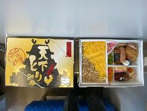
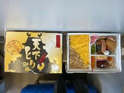
修学旅行第１日その１
今日（11月12日）から３泊４日の修学旅行が始まりました。おかげさまで、天候に恵まれ第１日目は順調な滑りだしとなりました。元気に楽しく安全で有意義な旅行になるように頑張ってまいります。お見送りに来ていただいた奥村先生ありがとうございました。
 集合は新幹線ホームです。新幹線で中継駅の名古屋へ向かいます。
集合は新幹線ホームです。新幹線で中継駅の名古屋へ向かいます。
集合は新幹線ホームです。新幹線で中継駅の名古屋へ向かいます。紅葉の季節

 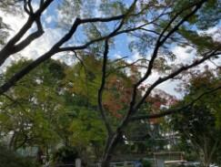11月9日（土）に120周年記念式典を無事挙行できましたことに対して、皆様に厚く御礼申し上げます。今日は、その式辞のなかで紹介させていただいた東郷池周りの木々の葉が色づき始めた様子をお見せしたいと思います。
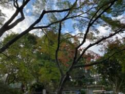11月9日（土）に120周年記念式典を無事挙行できましたことに対して、皆様に厚く御礼申し上げます。今日は、その式辞のなかで紹介させていただいた東郷池周りの木々の葉が色づき始めた様子をお見せしたいと思います。 東郷池復旧状況No.3
県内各地では、まだ台風15号、19号による被害からの回復が、ままならない状況にも関わらず先週金曜日（10月25日）の記録的豪雨によりまた、多くの被害を受けることとなりました。被害に遭われたすべての皆様へお見舞いを申し上げますとともに、一日も早い復旧と落ち着いた日常に戻れますことを祈念いたします。
台風15号で東郷池に直接倒れた檜を含む池周辺の倒木4本を本日（10月28日）やっと、業者の方に撤去していただくことができましたのでお知らせします。（写真 上段から下段左まで撤去の様子 下段中央、右は倒木撤去後の東郷池）


 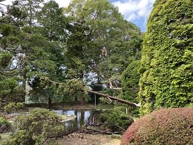
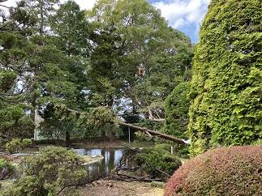


 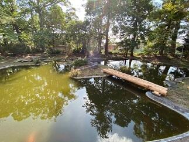
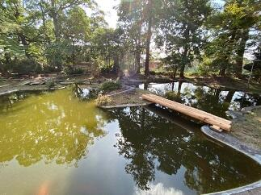
台風15号で東郷池に直接倒れた檜を含む池周辺の倒木4本を本日（10月28日）やっと、業者の方に撤去していただくことができましたのでお知らせします。（写真 上段から下段左まで撤去の様子 下段中央、右は倒木撤去後の東郷池）
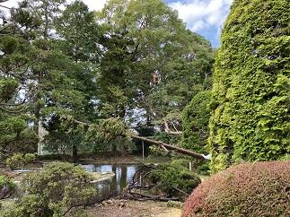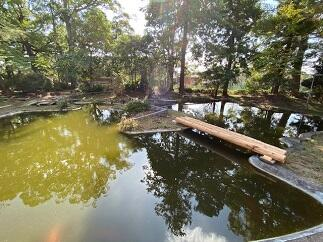 ダンス同好会ハローウィンパフォーマンス
今日（10月24日）の昼休みにダンス同好会によるハローウィンパフォーマンスが行われました。通常であれば、公演場所は、中庭だったのですが、校舎の外壁工事中のため今回は第１体育館での公演となりました。練習も工事のため場所の確保がたいへんだったと思います。それでも、多くの生徒、先生が見守るなか日頃の練習の成果を存分に発揮していたと思います。明るく切れのあるダンスパフォーマンスありがとうございました。
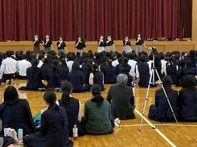


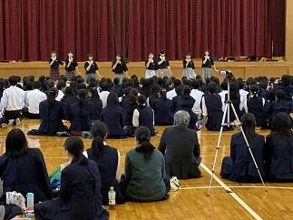
台風一過
観測史上最強の台風19号が昨日10月12日から今日13日にかけて日本各地で猛威を振い、たいへんな被害が出ています。まずは、被災された皆様に心よりお見舞い申し上げます。昨日、佐倉市全域にレベル４の避難勧告が出されました。第一体育館を佐倉市の避難所として昨日の午前10時から開設していました。本校には28名の方々が避難されていました。本校を利用されていた方々は午前6時30分ころには皆さん御自宅にお戻りになられました。佐倉市では、本日午前8時に避難勧告を解除し併せて市内すべての避難所を閉鎖しました。
学校の被害状況ですが、本校の周辺では昨日の23時50分ごろには風雨がおさまりはじめ台風15号に比べて被害は格段に少なくてすみました。写真は何事も無かったような青空の朝の風景。
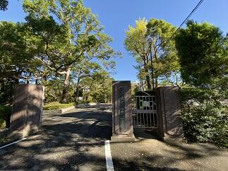


学校の被害状況ですが、本校の周辺では昨日の23時50分ごろには風雨がおさまりはじめ台風15号に比べて被害は格段に少なくてすみました。写真は何事も無かったような青空の朝の風景。
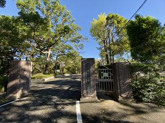
いきいき茨城ゆめ国体カヌースプリント200m競技
今日10月６日（日）は第74回国民体育大会カヌースプリント競技の200ｍの全種目の準決勝までの試合が予定されていましたが、台風並みのの強風のため全種目の予選のみ行って終了しました。明日、200ｍの準決勝と決勝を行うことになりました。明日の天候が良くなることを祈ります。→10月7日の様子は >>続きを読む をクリック


今日10月7日（月）は第74回国民体育大会カヌースプリント競技の200ｍの全種目の準決勝と決勝が行われました。あいにく天候は、昨日ほど風は酷くなかったものの北西の風がコースを進む選手に対して右斜め前方から吹いてくる状況が続いていて、時折雨も強く降る中で、競技が行われました。500ｍに続いて決勝には一歩及びませんでしたが、最後の一漕ぎまで力を出し切ってくれたと思います。大会全体を通して、天候に恵まれませんでしたが、素晴らしい全国の選手達とともに競った試合経験は選手の皆さんの宝であり、今後の糧となることでしょう。本当にお疲れ様でした。そしてありがとうございました。また、応援に来ていただいた保護者の皆様や千葉県教育庁の体育課の方々、本当にありがとうございました。


いきいき茨城ゆめ国体カヌースプリント500m競技
現在、第74回国民体育大会が、茨城県の各地を会場に開催されています。カヌースプリント競技については10月４日（金）から10月７日（月）の４日間で神栖市の神之池特設カヌー競技場で開催されています。昨日は強風の影響で予定していたすべての競技が今日に延期になりました。そのため今日10月５日（土）だけで、予選から決勝までの500ｍのすべての競技を行いました。本校からは少年男子のC1とK4の２種目に出場しました。惜しくも決勝までは、あと一歩でしたが、すばらしい試合をしてくれました。目標をクリアするため日々の練習の方法や試合に臨む気持ちの高め方、自分や友人を信じる強い気持ちの作り方など、全国での最高の檜舞台を踏むことができた選手は、また一段と大きく成長したと思います。応援に来ていたカヌー部員たちも、とても良い刺激を受けて明日からの練習に励めると思います。選手の皆さん本当にありがとうございました。明日、明後日は200ｍの競技も楽しんでください。そして、自分と仲間の力を信じて持てる力を存分に発揮して欲しいと思います。また、保護者の皆さんいつも応援ありがとうございます。


 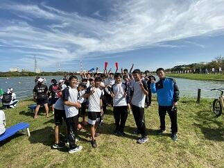
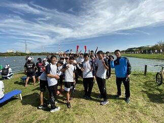
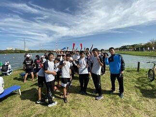 朝霧の風景
今日10月2日（水）の朝は霧が深く、視界が50ｍ位でした。天気予報では日中は気温が30℃に達するということで昨日に引き続き10月としては異例の真夏日の暑さが続きそうです。そんななか、弓道部が、匝瑳高校での練習に向けて元気にバスで出発しました。頑張ってください。